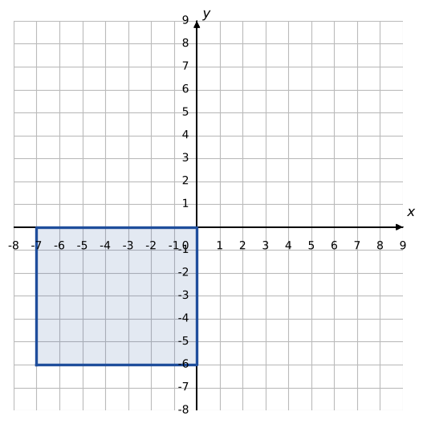
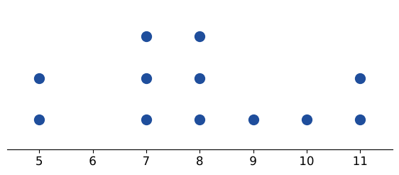

| Session | Questions | Tools | Points |
|---|---|---|---|
| 1 · The Number System; Expressions and Equations | 20 (1–20): 12 multiple choice, 3 select all, 4 short answer, 1 constructed response | No calculator; reference sheet | 23 |
| 2 · Ratios and Proportional Relationships; Geometry; Statistics and Probability | 20 (21–40): 12 multiple choice, 3 select all, 4 short answer, 1 constructed response | No calculator; reference sheet | 23 |
| # | Key | Domain | Skill | Standards |
|---|---|---|---|---|
| 1 | (D) -277 | The Number System | Positive and Negative Numbers | 6.NS.C.5 |
| 2 | (D) 5 | The Number System | Absolute Value and Ordering Numbers | 6.NS.C.7d |
| 3 | (B) 363 | The Number System | Dividing Multi-Digit Numbers | 6.NS.B.2 |
| 4 | (A) 27 | The Number System | Dividing Whole Numbers and Fractions | 6.NS.A.1 |
| 5 | (D) 11 | The Number System | Absolute Value of Rational Numbers | 6.NS.C.7c |
| 6 | (D) 5 units | The Number System | Distance on the Coordinate Plane | 6.NS.C.8 |
| 7 | (A) 3 | The Number System | Comparing and Ordering Rational Numbers | 6.NS.C.7a |
| 8 | (A) $40 | The Number System | Adding and Subtracting Multi-Digit Decimals | 6.NS.B.3 |
| 9 | (C) t is greater than or equal to 17 | Expressions and Equations | Inequalities | 6.EE.B.8 |
| 10 | (C) (3, -9) | The Number System | Rational Numbers and the Coordinate Plane | 6.NS.C.6b |
| 11 | (A) true | Expressions and Equations | Solutions of Equations | 6.EE.B.5 |
| 12 | (B) 6 and 7 | The Number System | Positive and Negative Numbers on the Number Line | 6.NS.C.6a, 6.NS.C.6c |
| 13 | Evaluate x² + 2y when x = 5 and y = 8. → 41; Evaluate 3x² - y when x = 7 and y = 6. → 141; Evaluate x² + 2y when x = 8 and y = 3. → 70 | Expressions and Equations | Writing and Evaluating Algebraic Expressions | 6.EE.A.2c |
| 14 | Evaluate: 9³ - [5 × (4 + 3)] + 1 → 695; Evaluate: 2[(3 + 4) × 3 - 4²] → 10; Evaluate: (6 + 2)² ÷ (5 - 3) - 2 → 30 | Expressions and Equations | The Order of Operations | 6.EE.A.2c, 5.OA.A.1 |
| 15 | Compute: 150.588 ÷ 5.34 → 28.2; Compute: 33.22 × 17.4 → 578.028; Compute: 377.784 ÷ 8.91 → 42.4 | The Number System | Multiplying and Dividing Multi-Digit Decimals | 6.NS.B.3 |
| 16 | 8 | Expressions and Equations | Solutions of Inequalities on the Number Line | 6.EE.B.8 |
| 17 | 42 | The Number System | Writing and Interpreting Inequality Statements | 6.NS.C.7b |
| 18 | 96 | Expressions and Equations | Equivalent Expressions | 6.EE.A.3, 6.EE.A.4 |
| 19 | 11 | Expressions and Equations | Applications of Inequalities | 6.EE.B.8 |
| 20 | 4-point constructed response | Expressions and Equations | Dog-walking business | |
| 21 | (A) 9 m | Geometry | Area of All Triangles | 6.G.A.1 |
| 22 | (D) 12 | Ratios and Proportional Relationships | Equivalent Ratios and Tables | 6.RP.A.3a |
| 23 | (A) 6 ounces for $5.66 | Ratios and Proportional Relationships | Comparing Ratios | 6.RP.A.3a, 6.RP.A.3b |
| 24 | (A) 5:23 | Ratios and Proportional Relationships | Ratios | 6.RP.A.1 |
| 25 | (A) What are the daily high temperatures in our town this month? | Statistics and Probability | Statistical Questions | 6.SP.A.1 |
| 26 | (A) 6 cups | Ratios and Proportional Relationships | Proportions | 6.RP.A.3 |
| 27 | (B) 42 units² | Geometry | Perimeter and Area of Polygons on the Coordinate Plane | 6.G.A.3, 6.NS.C.8 |
| 28 | (B) 120 cm² | Geometry | Area of Right Triangles | 6.G.A.1 |
| 29 | (B) 6 | Statistics and Probability | Displaying Data on Dot Plots, Histograms, and Box Plots | 6.SP.B.4 |
| 30 | (A) median, because the outlier pulls the mean | Statistics and Probability | Describing Distributions | 6.SP.B.5, 6.SP.A.2, 6.SP.A.3 |
| 31 | (D) 9 units | Geometry | Polygons on the Coordinate Plane | 6.G.A.3 |
| 32 | (C) 420 bottles | Ratios and Proportional Relationships | Ratio and Measurement Units | 6.RP.A.3d |
| 33 | 55% of the seats in a theater are filled. If there are 400 in all, how many is that? → 220; 5% of the seats in a theater are filled. If there are 400 in all, how many is that? → 20; 70% of the students in a school ride the bus. If there are 200 in all, how many is that? → 140 | Ratios and Proportional Relationships | Percent and Rates per 100 | 6.RP.A.3c |
| 34 | Find the area of a rectangle with length 10 cm and width 4 cm. → 40 cm²; A kite has diagonals of 11 m and 4 m. Find its area. → 22 m²; A kite has diagonals of 16 m and 6 m. Find its area. → 48 m² | Geometry | Area of Special Quadrilaterals | 6.G.A.1 |
| 35 | Find the volume of a rectangular prism 4 1/2 in. long, 5 in. wide, and 7 1/2 in. tall. → 168 3/4 in³; Find the volume of a rectangular prism 3 in. long, 8 in. wide, and 5 1/2 in. tall. → 132 in³; Find the volume of a rectangular prism 4 1/2 in. long, 4 1/2 in. wide, and 4 1/2 in. tall. → 91 1/8 in³ | Geometry | Volume of Right Rectangular Prisms | 6.G.A.2 |
| 36 | 507 cm² | Geometry | Nets and Surface Area | 6.G.A.4 |
| 37 | $63 | Ratios and Proportional Relationships | Unit Rate | 6.RP.A.2, 6.RP.A.3b |
| 38 | 17.3 | Statistics and Probability | Mean and Median | 6.SP.B.5c |
| 39 | 78.5 | Statistics and Probability | Comparing Data Displays | 6.SP.B.5c |
| 40 | 4-point constructed response | Ratios and Proportional Relationships | Paint mixture |


Mr. K’s Classroom · Grade 6 Practice Test A · Teacher key. Questions 1–19 and 21–39 come from the 6th Grade Math question banks, whose answer keys are recomputed in CI (verify_keys.py).